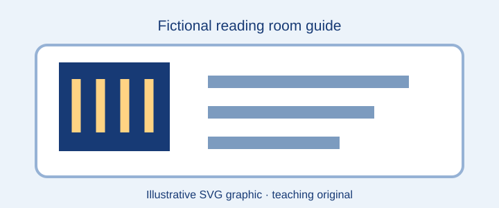

Welcome
Browse three fictional catalogue objects. Use the search box to locate a title or subject; examine one restricted object without a public download.

Audio orientation example
Browse items
Access and citation
Public descriptions can be cited using the item's stable identifier, title and the name of this fictional collection. The restricted item shows a descriptive record only; no protected file is supplied.
Accessibility: Plain text equivalents accompany media descriptions. Use Tab to test navigation. This example does not claim full WCAG conformance.